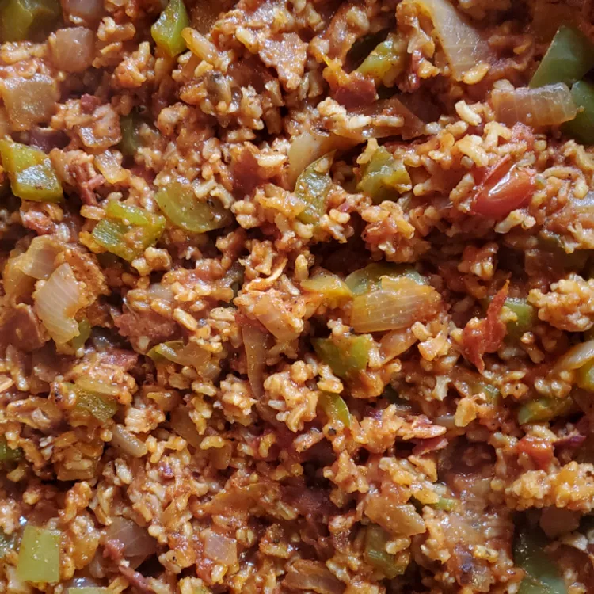

Spanish Rice

Ingredients
- 1 cup chicken broth
- 1 cup tomato sauce
- 6 slices bacon
- 2 onions, diced
- 1 cup uncooked white rice
- 2 tomatoes, diced
- 2 green bell peppers, diced
- ½ teaspoon chili powder
- ½ teaspoon salt and ground black pepper
- 1 (10 ounce) can whole kernel corn, drained (Optional)
Steps
- Bring chicken broth and tomato sauce to a boil in a small saucepan, about 5 minutes. Reduce heat to medium
and maintain a simmer while preparing the remaining ingredients.
- Meanwhile, place bacon in a large skillet and cook over medium-high heat, turning occasionally, until evenly
browned, about 10 minutes. Transfer bacon to a paper towel-lined plate, reserving bacon grease in the
skillet. Chop bacon.
- Cook and stir onion in reserved bacon grease over medium heat until tender, about 5 minutes. Stir in rice;
cook and stir until lightly browned, 3 to 5 minutes. Pour boiling chicken broth and tomato sauce into rice
mixture; add diced tomatoes, green peppers, and chopped bacon. Season with chili powder, salt, and pepper.
- Cover and simmer until rice is tender and liquid is absorbed, 30 to 40 minutes. Stir corn into rice mixture
before serving